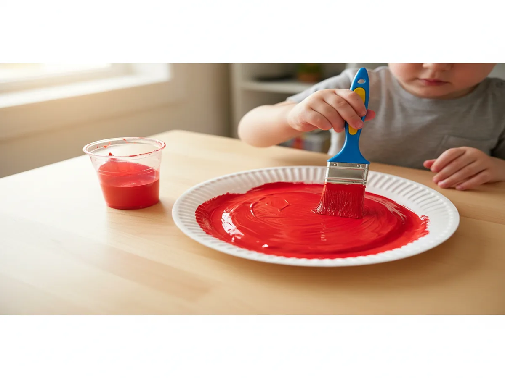
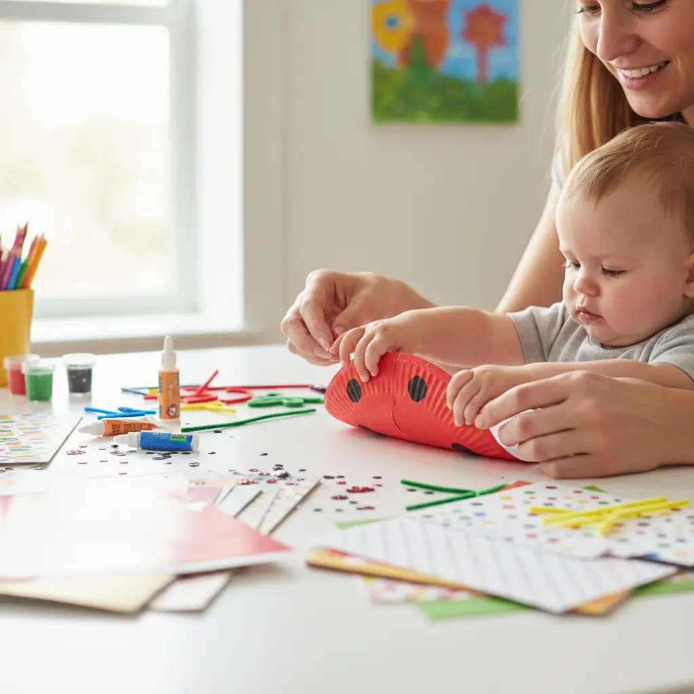
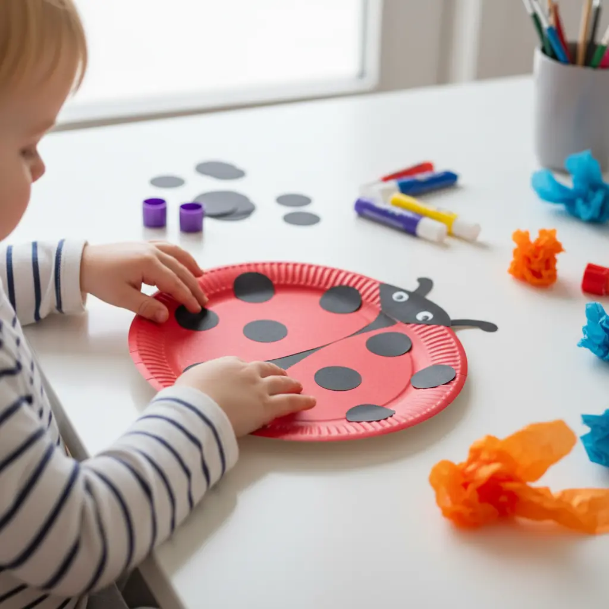
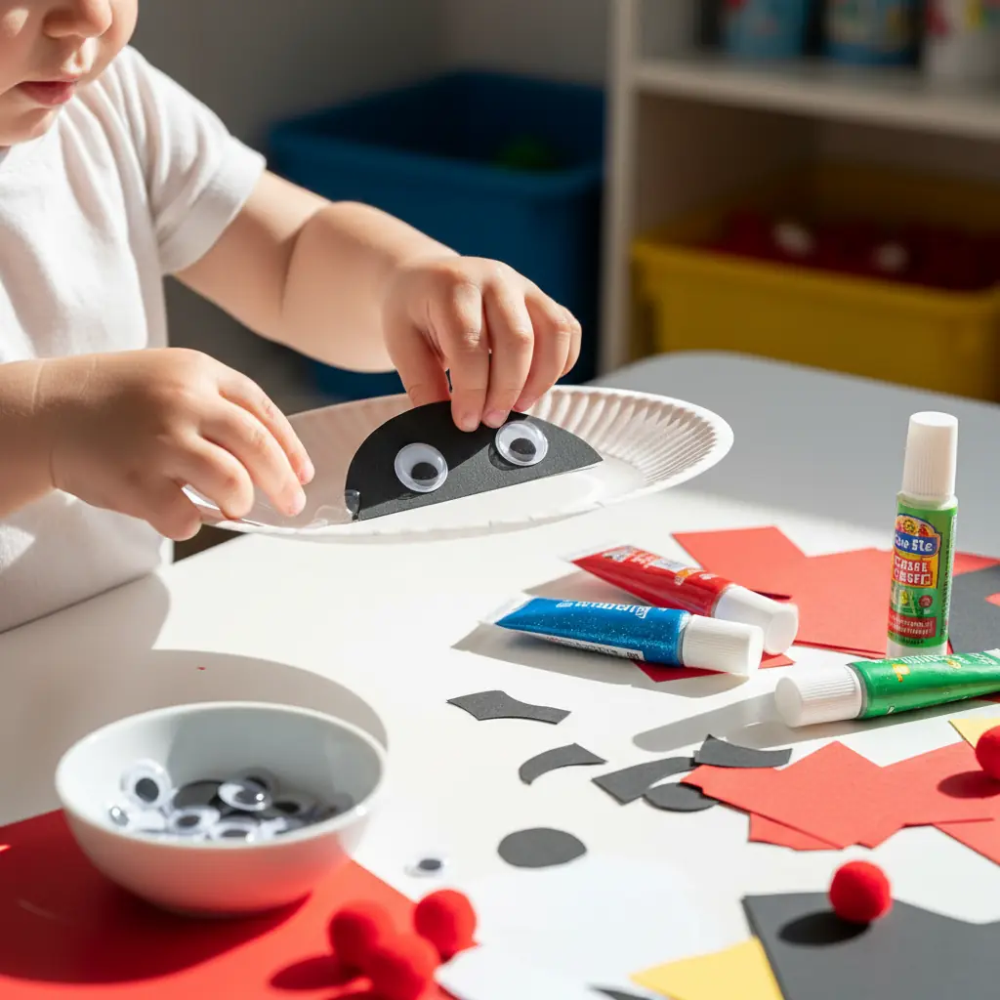
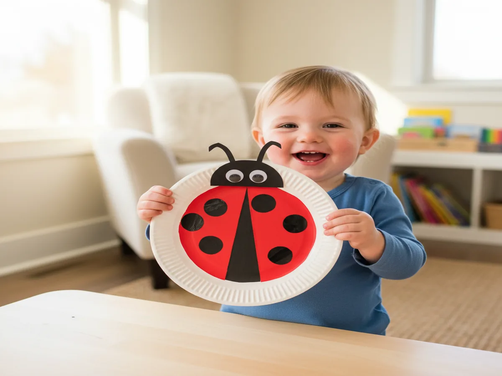

If you're looking for a fun, colorful spring craft that even the littlest hands can tackle, you're in the right place! This easy paper plate ladybug craft for toddlers is one of our absolute favorites — it comes together in about 15 minutes, uses supplies you probably already have at home, and the end result is so stinking cute that you'll want to hang it on the fridge immediately. Grab your little one, throw on some old clothes, and let's get crafting!
Why Kids Love This Craft
There's something about ladybugs that makes kids absolutely light up. Maybe it's the bright red color, the cute little spots, or the fact that ladybugs are one of the few bugs that toddlers actually want to hold! This paper plate ladybug art project for kids taps into that natural excitement and turns it into a hands-on creative experience. Your child gets to paint, tear, stick, and assemble — all while building fine motor skills they'll use every single day.
Beyond the fun factor, this craft is genuinely doable for tiny humans. There's no tricky cutting, no frustrating folding, and no "Mom, I can't do it!" meltdowns. The paper plate provides a sturdy, forgiving canvas that's easy for little fingers to grip and decorate. Whether your kiddo is 2 or 5, they'll feel proud of what they created — and that confidence boost? That's the real magic of crafting together.
What You'll Need
- 1 white paper plate (standard size or small — both work great!)
- Red washable tempera paint for toddlers
- Black construction paper
- Googly eyes (medium or large size are easiest for little hands)
- Sponge brush or foam paintbrush
- Glue stick or white school glue
- Black dot stickers or black washable marker
- Scissors (for grown-up use only)
Step-by-Step Instructions
Step 1: Paint the Paper Plate Red
Start by squeezing a generous dollop of red washable paint onto the back (bottom) side of the paper plate. Let your toddler go to town spreading it around with a brush, sponge, or honestly — their fingers! Finger painting is half the fun for little ones, and it's amazing for sensory development. Don't worry about getting perfect coverage; a little white peeking through just adds character. Once the plate is covered, set it aside to dry completely. Pro tip: Use a hair dryer on low to speed up drying time if your toddler is impatient (aren't they all?).

Step 2: Create the Ladybug's Head
While the paint dries, it's time to make the head! Take your black construction paper and cut out a half-circle shape that's roughly the size of one-third of the paper plate. This doesn't need to be perfect at all — ladybugs in nature aren't perfectly symmetrical either! If your child is a preschooler who's working on scissor skills, you can draw the shape and let them try cutting it out with safety scissors. For younger toddlers, this is definitely a grown-up step. Set the head piece aside and get ready for the fun part!

Step 3: Add the Spots
Now for the most exciting part of this easy paper plate ladybug craft for toddlers — the spots! You have a few options here depending on your child's age. Black dot stickers are absolutely perfect for toddlers because peeling and sticking is great fine motor practice and requires zero drying time. If you don't have stickers, cut small circles from black construction paper and let your child glue them on. Older kids can use a black marker or even dip their fingertip in black paint to make polka dots. Let your child place as many or as few spots as they want — some ladybugs are spotty, and some are extra spotty. There are no rules here!

Step 4: Attach the Head and Eyes
Once the red paint is dry and the spots are on, it's time to bring this little bug to life! Help your child glue the black half-circle head piece onto the top edge of the paper plate. A glue stick works well for this, though white school glue gives a stronger hold if you plan to hang the craft up. Next comes the best part — the googly eyes! Let your toddler peel off the backing (if they're self-adhesive) or add a dab of glue and press those wiggly eyes right onto the black head. Watch your child's face when the ladybug suddenly has a personality — it's priceless every single time.

Step 5: Add the Finishing Touches
To complete your cute paper plate ladybug activity for little kids, draw a vertical line down the center of the red plate using a black marker. This represents the line where the ladybug's wings meet! You can also cut two small strips of black construction paper and curl them slightly to create antennae — just glue them to the back of the head so they stick up. If your child wants to add extra details like a smiley mouth, little legs, or even glitter (brave parent alert!), let their creativity run wild. And just like that — you've got one adorable ladybug ready to display!

Tips for Success
- For 2-year-olds: Keep it super simple. Focus on the painting and sticker steps, and handle the cutting and assembly yourself. This easy ladybug craft for 2 year olds is really about the sensory experience of painting and decorating — not perfection!
- For preschoolers (ages 3–5): Encourage more independence! Let them try gluing, placing pieces, and even cutting with safety scissors. A simple paper plate ladybug craft for preschoolers can be a great opportunity to practice following multi-step directions.
- Contain the mess: Lay down a plastic tablecloth, old newspaper, or even a trash bag on your work surface. Put the paint in a paper bowl instead of using it straight from the bottle — it's easier for little hands and prevents accidental spills.
- Make it a learning moment: Talk about ladybugs while you craft! Count the spots together, discuss colors, or read a ladybug book beforehand. The Grouchy Ladybug by Eric Carle is a perfect pairing for this activity.
Variations to Try
Tissue Paper Ladybug: Skip the paint entirely and let your child glue small squares of red tissue paper onto the plate instead. This mosaic-style approach is fantastic for fine motor development, creates a beautiful textured effect, and — best of all — there's zero paint cleanup. It's an especially great option if you're crafting at a playdate or party with multiple kids.
Ladybug Family: Make a whole ladybug family using different sized plates! Use a large dinner plate for the mama ladybug, a standard plate for the kid ladybug, and small dessert plates for the baby ladybugs. Your toddler will love lining them up from biggest to smallest, and it sneaks in a little math practice too. Display them together on a wall or bulletin board for the most adorable spring decoration.
Magnetic Ladybug: Glue a magnet strip to the back of the finished ladybug and turn it into a fridge magnet! Use a smaller paper plate (or cut a standard plate down) so it's not too heavy. This makes a wonderful handmade gift for grandparents — trust me, it'll stay on their fridge for years. This toddler ladybug craft with paper plates becomes an instant keepsake when you write your child's name and date on the back.
More Crafts You'll Love
If your little one had a blast with this easy paper plate ladybug craft for toddlers, you'll definitely want to try these too:
- Easy Paper Plate Butterfly Craft for Preschoolers — another adorable paper plate project perfect for spring!
- Easy Paper Plate Rainbow Fish Craft for Toddlers — a colorful, cheerful craft your little one will love.
Final Thoughts
This easy paper plate ladybug craft for toddlers is proof that you don't need fancy supplies or hours of free time to create something special with your child. In just 15 minutes, you get quality bonding time, a boost in your little one's fine motor skills, and an adorable ladybug that'll make everyone smile. Whether you're doing this on a rainy afternoon, as part of a spring unit, or just because your kiddo said "I wanna make something!" — this craft always delivers. If you try it, I'd love to see your little one's creation! Snap a photo and share it on Pinterest — and don't forget to pin this post so you can find it again next time you need a quick, easy win. Happy crafting, mama! 🐞❤️